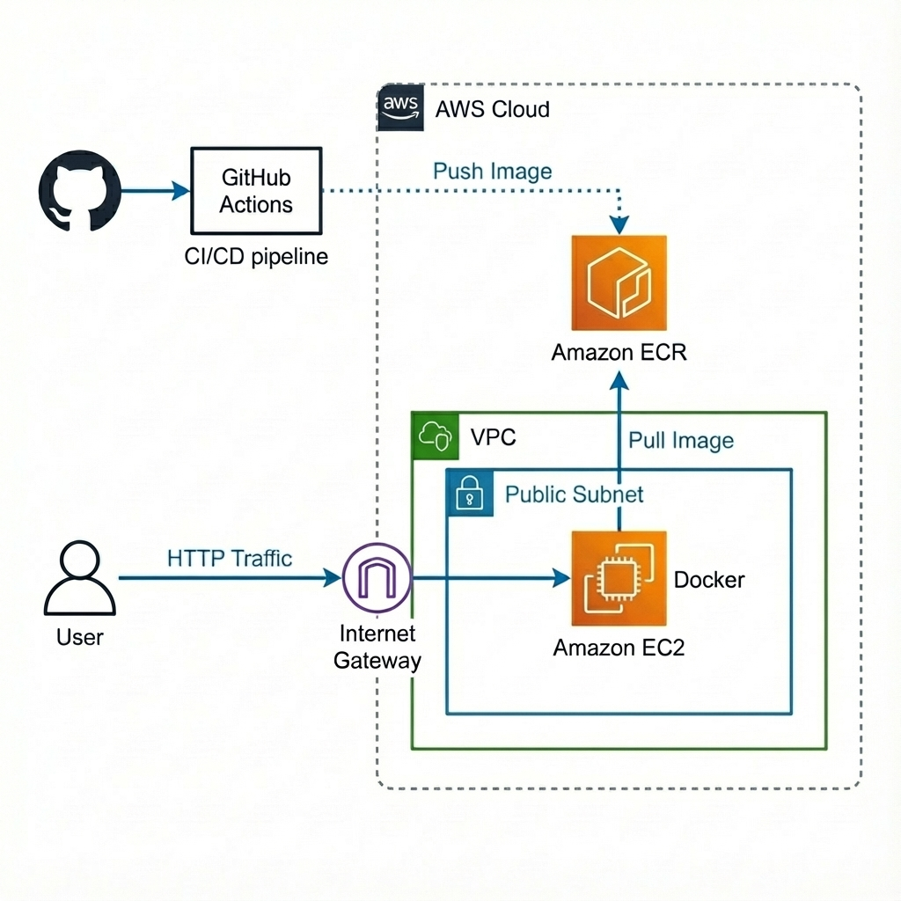

This is a full-stack Hello World application with automated infrastructure provisioning and continuous deployment. The project showcases modern DevOps practices including containerization, infrastructure as code, and automated CI/CD pipelines for deploying to AWS.
The application runs on AWS with the following components:
